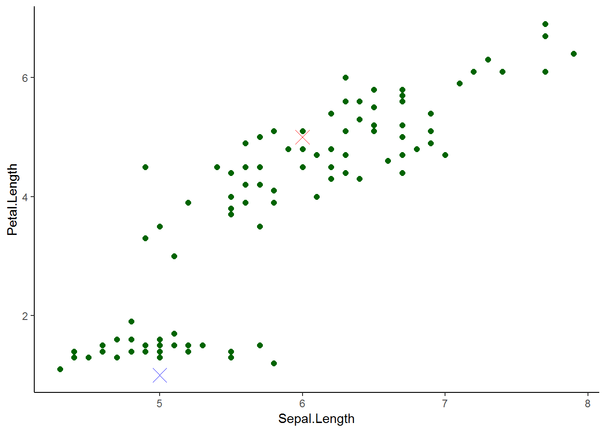
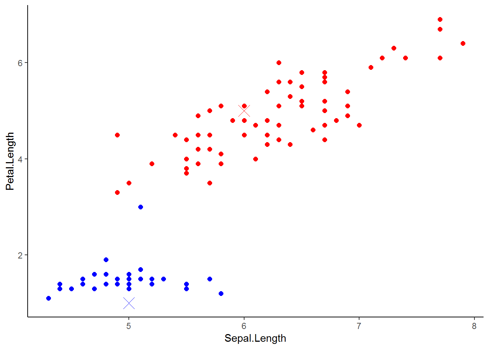
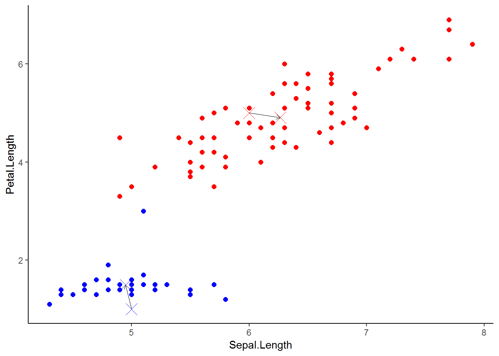
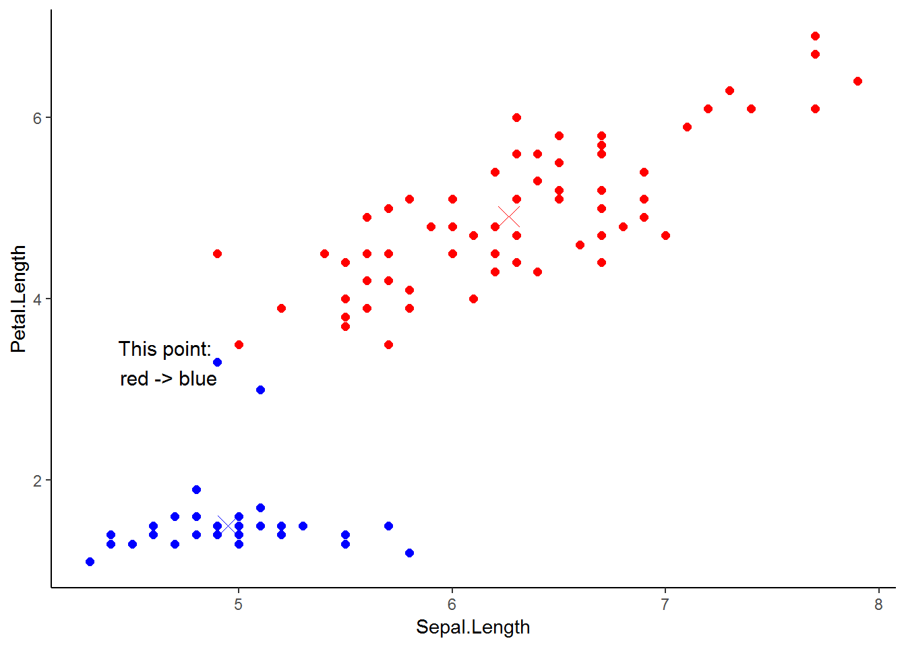
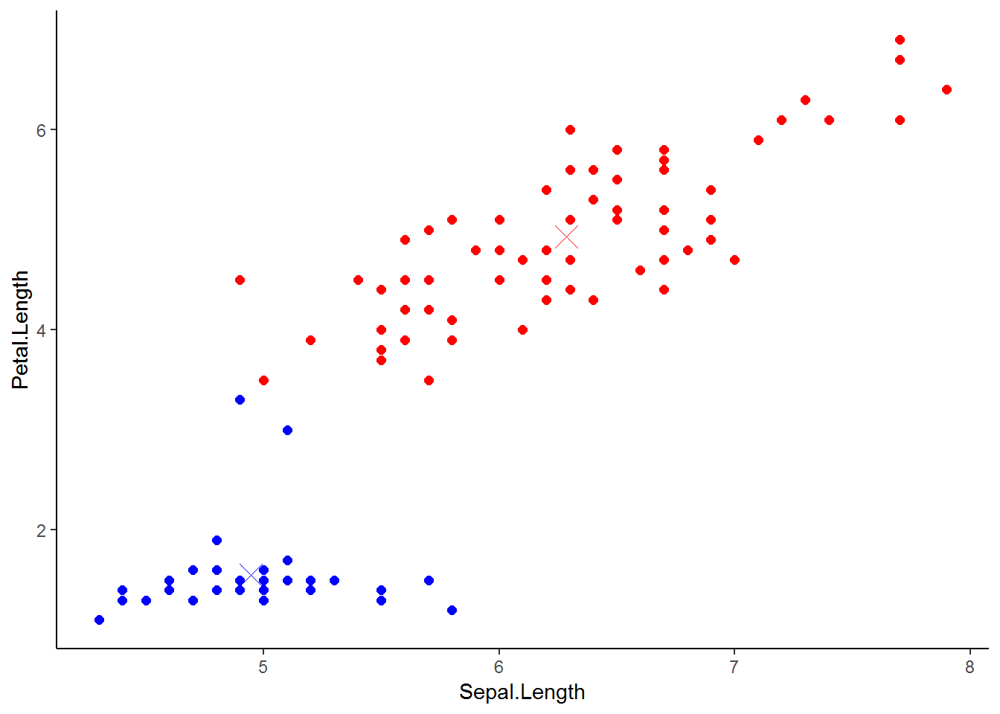
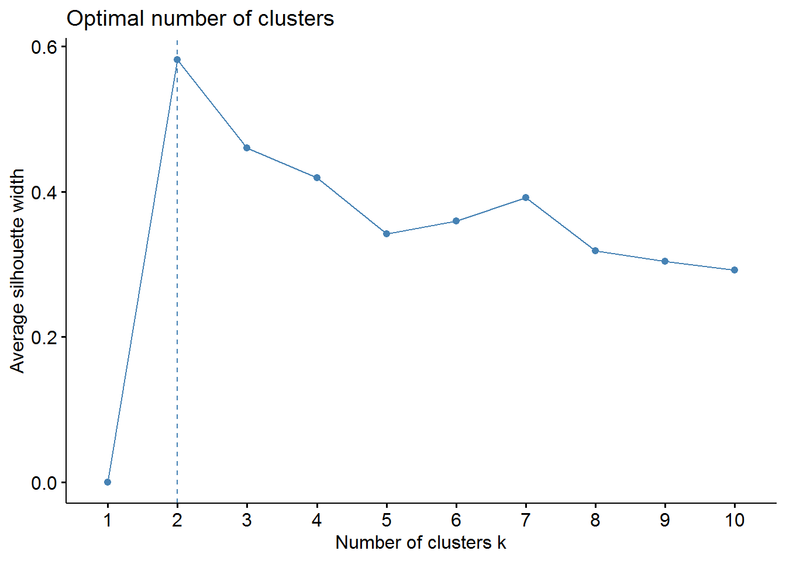
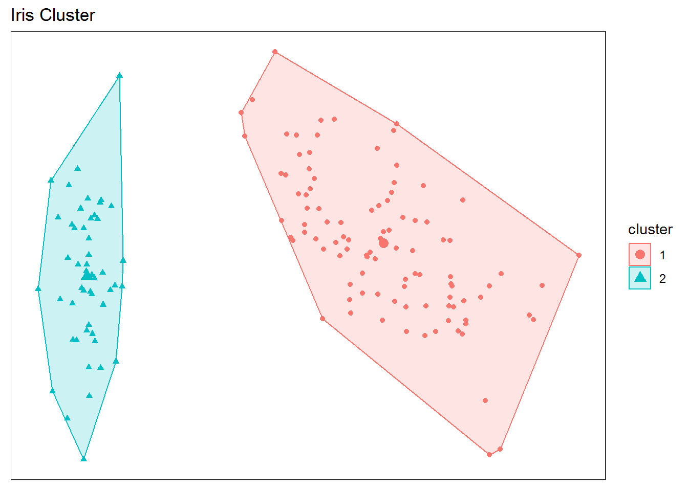

2. k-means¶
2.1. Giới thiệu¶
Trong chương này, chúng ta sẽ cùng tìm hiểu về thuật toán
clustering K-means - một thuật toán thuộc về nhóm unsupervised
learning (“học không giám sát”).
Clustering K-means có thể ứng dụng trong các lĩnh vực như ngân hàng
hay thương mại điện tử vào việc phân nhóm khách hàng dựa trên những đặc
điểm về hành vi, thói quen chi tiêu và demographics của họ. Điều đó sẽ
giúp cho ngân hàng hay các công ty thương mại điện tử có thể hiểu rõ
được hành vi khách hàng của mình, để sau đó có thể offer những sản phẩm,
dịch vụ phù hợp với nhu cầu của từng khách hàng.
Thuật toán K-means sẽ nhóm các đối tượng (quan sát) có những đặc
điểm và hành vi tương đồng vào K nhóm bất kỳ. Số lượng nhóm K sẽ phụ
thuộc vào mục đích cũng như bối cảnh mà chúng ta đặt ra (thông thường
nên từ 2 đến 10 nhóm).
Ví dụ, sử dụng dữ liệu iris có sẵn trong R chúng ta sẽ phân nhóm
(cluster) các quan sát thành 2 nhóm dựa vào biến Sepal.Length và
Petal.length.
library(dplyr)
# Lấy ngẫu nhiên 100 quan sát,
# và chỉ lấy 2 biến `Sepal.Length` và `Petal.Length`
set.seed(1)
data <- iris %>%
select(Sepal.Length, Petal.Length) %>%
sample_n(100)
library(ggplot2)
data %>%
ggplot(aes(Sepal.Length, Petal.Length)) +
geom_point(size = 2, col = "darkgreen")+
theme_classic()

- Bước 1: Chúng ta sẽ lựa chọn ngẫu nhiên 2 tâm
(
cluster centroids) - tương đương với 2 nhóm, là 2 điểm x (đỏ) và x (xanh dương) như sau:
data %>%
ggplot(aes(Sepal.Length, Petal.Length)) +
geom_point(size = 2, col = "darkgreen")+
theme_classic()+
geom_point(aes(x=6,y=5), col = "red", shape=4, size = 5)+
geom_point(aes(x=5,y=1), col = "blue", shape=4, size = 5)

- Bước 2: Quan sát nào mà “gần” hơn với điểm x (đỏ) thì chúng ta sẽ nhóm quan sát đó vào một nhóm màu đỏ, còn những quan sát nào mà “gần” hơn với điểm x (xanh dương), sẽ thuộc về nhóm màu xanh dương. Ở đây “gần” hơn được hiểu là khoảng cách từ quan sát đó đến điểm x nào nhỏ hơn.
Khoảng cách giữa 2 điểm có tọa độ (x1, y1) và (x2, y2) được tính như sau:
data1 <- data %>%
# Set ngẫu nhiên 2 centroids
mutate(Sepal.Length_red = 6,
Petal.Length_red = 5,
Sepal.Length_blue = 5,
Petal.Length_blue = 1
) %>%
# Tính khoảng cách từ các quan sát đến 2 centroids
mutate(
distance_red = sqrt((Sepal.Length-Sepal.Length_red)^2 + (Petal.Length - Petal.Length_red)^2),
distance_blue = sqrt((Sepal.Length-Sepal.Length_blue)^2 + (Petal.Length - Petal.Length_blue)^2)
) %>%
# Tạo biến mới - nhóm mà các quan sát được phân vào
mutate(group = case_when(
distance_red < distance_blue ~ "red",
TRUE ~ "blue"
) %>% as.factor)
# Plot dữ liệu mới
data1 %>%
ggplot(aes(Sepal.Length, Petal.Length), group = group) +
geom_point(size = 2, aes(col = group))+
theme_classic()+
geom_point(aes(x=6,y=5), col = "red", shape=4, size = 5)+
geom_point(aes(x=5,y=1), col = "blue", shape=4, size = 5)+
scale_color_manual(
values = c("blue" = "blue", "red" = "red")
)+
theme(legend.position = "none")

- Bước 3: Tiếp theo, chúng ta sẽ di chuyển 2 tâm x (đỏ) và x (xanh
dương) (
move centroids) đến điểm mới có tọa độ bằng trung bình tọa độ các quan sát thuộc về 2 nhóm nói trên.
# Tính tọa độ của 2 centroids mới
new_centroids_1 <- data1 %>%
group_by(group) %>%
summarise(average_sepal = mean(Sepal.Length),
average_petal = mean(Petal.Length)
) %>%
as.data.frame
# Plot di chuyển centroids
data1 %>%
ggplot(aes(Sepal.Length, Petal.Length), group = group) +
geom_point(size = 2, aes(col = group))+
theme_classic()+
geom_point(aes(x=6,y=5), col = "red", shape=4, size = 5)+
geom_point(aes(x=5,y=1), col = "blue", shape=4, size = 5)+
scale_color_manual(
values = c("blue" = "blue", "red" = "red")
)+
theme(legend.position = "none")+
geom_point(aes(x=new_centroids_1$average_sepal[new_centroids_1$group == "red"],
y=new_centroids_1$average_petal[new_centroids_1$group == "red"]
),
col = "red", shape=4, size = 5)+
geom_point(aes(x=new_centroids_1$average_sepal[new_centroids_1$group == "blue"],
y=new_centroids_1$average_petal[new_centroids_1$group == "blue"]
),
col = "blue", shape=4, size = 5)+
geom_segment(aes(x = 6,
y = 5,
xend = new_centroids_1$average_sepal[new_centroids_1$group == "red"],
yend = new_centroids_1$average_petal[new_centroids_1$group == "red"]
),
col = "black",
arrow = arrow(length = unit(0.015, "npc")),
size = 0.1
)+
geom_segment(aes(x = 5,
y = 1,
xend = new_centroids_1$average_sepal[new_centroids_1$group == "blue"],
yend = new_centroids_1$average_petal[new_centroids_1$group == "blue"]
),
col = "black",
arrow = arrow(length = unit(0.015, "npc")),
size = 0.1
)

- Bước 4: Bây giờ, chúng ta sẽ lặp lại quá trình đã làm, tức quan sát gần hơn với điểm centroids mới nào thì sẽ thuộc về nhóm tương ứng. Kết quả như sau:
data2 <- data %>%
# Update 2 centroids mới
mutate(Sepal.Length_red = new_centroids_1$average_sepal[new_centroids_1$group == "red"],
Petal.Length_red = new_centroids_1$average_petal[new_centroids_1$group == "red"],
Sepal.Length_blue = new_centroids_1$average_sepal[new_centroids_1$group == "blue"],
Petal.Length_blue = new_centroids_1$average_petal[new_centroids_1$group == "blue"]
) %>%
# Tính khoảng cách từ các quan sát đến 2 centroids
mutate(
distance_red = sqrt((Sepal.Length-Sepal.Length_red)^2 + (Petal.Length - Petal.Length_red)^2),
distance_blue = sqrt((Sepal.Length-Sepal.Length_blue)^2 + (Petal.Length - Petal.Length_blue)^2)
) %>%
# Tạo biến mới - nhóm mà các quan sát được phân vào
mutate(group = case_when(
distance_red < distance_blue ~ "red",
TRUE ~ "blue"
) %>% as.factor)
# Plot dữ liệu mới
data2 %>%
ggplot(aes(Sepal.Length, Petal.Length), group = group) +
geom_point(size = 2, aes(col = group))+
theme_classic()+
scale_color_manual(
values = c("blue" = "blue", "red" = "red")
)+
theme(legend.position = "none")+
geom_point(aes(x=new_centroids_1$average_sepal[new_centroids_1$group == "red"],
y=new_centroids_1$average_petal[new_centroids_1$group == "red"]
),
col = "red", shape=4, size = 5)+
geom_point(aes(x=new_centroids_1$average_sepal[new_centroids_1$group == "blue"],
y=new_centroids_1$average_petal[new_centroids_1$group == "blue"]
),
col = "blue", shape=4, size = 5)+
annotate("text",
x = 4.9, y = 3.3,
col = "black",
size = 4,
hjust = 1,
label = "This point: \n red -> blue"
)

Như vậy, với 2 centroids mới việc phân nhóm quan sát có sự thay đổi: Có 1 điểm lúc trước thuộc về nhóm đỏ, nhưng giờ thuộc về nhóm xanh dương.
- Bước 5: Tiếp tục quá trình như trên, chúng ta sẽ lại di chuyển các centroids để tìm các centroids mới.
# Tính tọa độ của 2 centroids mới
new_centroids_2 <- data2 %>%
group_by(group) %>%
summarise(average_sepal = mean(Sepal.Length),
average_petal = mean(Petal.Length)
) %>%
as.data.frame
# Plot di chuyển centroids
data2 %>%
ggplot(aes(Sepal.Length, Petal.Length), group = group) +
geom_point(size = 2, aes(col = group))+
theme_classic()+
scale_color_manual(
values = c("blue" = "blue", "red" = "red")
)+
theme(legend.position = "none")+
geom_point(aes(x=new_centroids_1$average_sepal[new_centroids_1$group == "red"],
y=new_centroids_1$average_petal[new_centroids_1$group == "red"]
),
col = "red", shape=4, size = 5)+
geom_point(aes(x=new_centroids_1$average_sepal[new_centroids_1$group == "blue"],
y=new_centroids_1$average_petal[new_centroids_1$group == "blue"]
),
col = "blue", shape=4, size = 5)+
geom_point(aes(x=new_centroids_2$average_sepal[new_centroids_2$group == "red"],
y=new_centroids_2$average_petal[new_centroids_2$group == "red"]
),
col = "red", shape=4, size = 5)+
geom_point(aes(x=new_centroids_2$average_sepal[new_centroids_2$group == "blue"],
y=new_centroids_2$average_petal[new_centroids_2$group == "blue"]
),
col = "blue", shape=4, size = 5)+
geom_segment(aes(x = new_centroids_1$average_sepal[new_centroids_1$group == "red"],
y = new_centroids_1$average_petal[new_centroids_1$group == "red"],
xend = new_centroids_2$average_sepal[new_centroids_2$group == "red"],
yend = new_centroids_2$average_petal[new_centroids_2$group == "red"]
),
col = "black",
arrow = arrow(length = unit(0.015, "npc")),
size = 0.1
)+
geom_segment(aes(x = new_centroids_1$average_sepal[new_centroids_1$group == "blue"],
y = new_centroids_1$average_petal[new_centroids_1$group == "blue"],
xend = new_centroids_2$average_sepal[new_centroids_2$group == "blue"],
yend = new_centroids_2$average_petal[new_centroids_2$group == "blue"]
),
col = "black",
arrow = arrow(length = unit(0.015, "npc")),
size = 0.1
)
- Bước 6: Phân nhóm lại theo các centroids mới
data3 <- data %>%
# Update 2 centroids mới
mutate(Sepal.Length_red = new_centroids_2$average_sepal[new_centroids_2$group == "red"],
Petal.Length_red = new_centroids_2$average_petal[new_centroids_2$group == "red"],
Sepal.Length_blue = new_centroids_2$average_sepal[new_centroids_2$group == "blue"],
Petal.Length_blue = new_centroids_2$average_petal[new_centroids_2$group == "blue"]
) %>%
# Tính khoảng cách từ các quan sát đến 2 centroids
mutate(
distance_red = sqrt((Sepal.Length-Sepal.Length_red)^2 + (Petal.Length - Petal.Length_red)^2),
distance_blue = sqrt((Sepal.Length-Sepal.Length_blue)^2 + (Petal.Length - Petal.Length_blue)^2)
) %>%
# Tạo biến mới - nhóm mà các quan sát được phân vào
mutate(group = case_when(
distance_red < distance_blue ~ "red",
TRUE ~ "blue"
) %>% as.factor)
# Plot dữ liệu mới
data3 %>%
ggplot(aes(Sepal.Length, Petal.Length), group = group) +
geom_point(size = 2, aes(col = group))+
theme_classic()+
scale_color_manual(
values = c("blue" = "blue", "red" = "red")
)+
theme(legend.position = "none")+
geom_point(aes(x=new_centroids_2$average_sepal[new_centroids_2$group == "red"],
y=new_centroids_2$average_petal[new_centroids_2$group == "red"]
),
col = "red", shape=4, size = 5)+
geom_point(aes(x=new_centroids_2$average_sepal[new_centroids_2$group == "blue"],
y=new_centroids_2$average_petal[new_centroids_2$group == "blue"]
),
col = "blue", shape=4, size = 5)

Kết quả phân nhóm vẫn giống như kết quả trước đó, thuật toán dừng lại.
2.2. Thuật toán¶
Như vậy, chúng ta có thể khái quát lại thuật toán của ``K-means`` như sau:
- Bước 1: Chọn ngẫu nhiên K tâm/centroids
- Bước 2: Tính khoảng cách từ các đối tượng/quan sát đến K tâm
- Bước 3: Dựa vào giá trị khoảng cách ở bước 2, chúng ta nhóm các quan sát vào K nhóm: Các quan sát gần với tâm nào hơn thì sẽ thuộc về nhóm đó.
- Bước 4: Xác định các tâm mới của K nhóm (tâm mới của mỗi nhóm có tọa độ bằng trung bình tọa độ của các quan sát trong nhóm đó).
- Bước 5: Lặp lại bước 2 đến bước 4 cho đến khi không có sự thay
đổi kết quả phân nhóm các quan sát hoặc theo số lượng
iterationsmà chúng ta đặt ra cho thuật toán chạy.
2.3. Ưu nhược điểm của K-means¶
Ưu điểm của thuật toán clustering K-means là đơn giản và dễ tính
toán. Tuy nhiên thuật toán này có một số nhược điểm sau: Thứ nhất,
do lấy ngẫu nhiên tâm/centroid nên khi dữ liệu lớn với rất nhiều các
biến đầu vào thuật toán có thể phân loại các quan sát vào các nhóm khác
nhau tại mỗi vòng (iteration). Thứ hai, thuật toán sẽ gặp vấn đề nếu
các biến đầu vào có các đơn vị khác nhau, ví dụ như: biến chi tiêu hoặc
thu nhập của khách hàng đơn vị là triệu đồng, biến đánh dấu khách hàng
có sử dụng thẻ tín dụng (dummy 1-0), hoặc biến tỷ lệ chi tiêu thẻ tín
dụng trên hạn mức được cấp, v.v.
Vì vậy, để khắc phục vấn đề trên trước khi áp dụng thuật toán
K-means, chúng ta cần phải chuẩn hóa dữ liệu đầu vào bằng cách
scaling dữ liệu:
2.4. Thực hành trên R¶
Sau đây chúng ta sẽ cùng tìm hiểu cách thực hiện K-means trên R.
- Bước 1: Chuẩn hóa dữ liệu (
Scaling):
# Scale dữ liệu
iris_scale <- scale(iris %>% select(-Species))
- Bước 2: Xác định số lượng nhóm tối ưu
# Xác định số lượng nhóm tối ưu
library(factoextra)
fviz_nbclust(iris_scale,
kmeans,
method = "silhouette")

Kết quả cho thấy trường hợp này chúng ta nên chia làm 2 nhóm sẽ tối ưu. Trong thực tế, việc chia thành bao nhiêu nhóm sẽ phụ thuộc vào mục tiêu kinh doanh, thông thường số lượng nhóm nên từ 2 đến 10.
- Bước 3: Thực hiện
clustering K-meansthành 2 nhóm
# Thực hiện thuật toán K-means
k_means_fit <- kmeans(iris_scale,
centers = 2 # số lượng nhóm
)
# Nhóm của các quan sát
k_means_fit$cluster
## [1] 2 2 2 2 2 2 2 2 2 2 2 2 2 2 2 2 2 2 2 2 2 2 2 2 2 2 2 2 2 2 2 2 2 2 2
## [36] 2 2 2 2 2 2 2 2 2 2 2 2 2 2 2 1 1 1 1 1 1 1 1 1 1 1 1 1 1 1 1 1 1 1 1
## [71] 1 1 1 1 1 1 1 1 1 1 1 1 1 1 1 1 1 1 1 1 1 1 1 1 1 1 1 1 1 1 1 1 1 1 1
## [106] 1 1 1 1 1 1 1 1 1 1 1 1 1 1 1 1 1 1 1 1 1 1 1 1 1 1 1 1 1 1 1 1 1 1 1
## [141] 1 1 1 1 1 1 1 1 1 1
# Tâm của mỗi nhóm
k_means_fit$centers
## Sepal.Length Sepal.Width Petal.Length Petal.Width
## 1 0.5055957 -0.4252069 0.650315 0.6253518
## 2 -1.0111914 0.8504137 -1.300630 -1.2507035
# Số lượng quan sát tại mỗi nhóm
k_means_fit$size
## [1] 100 50
- Bước 4: Trực quan hóa kết quả
# Trực quan hóa kết quả K-means
fviz_cluster(k_means_fit,
data = iris_scale,
geom = "point",
main = "Iris Cluster"
)+
theme_bw()+
theme(axis.text = element_blank(),
axis.title = element_blank(),
axis.ticks = element_blank(),
panel.grid = element_blank()
)

Như vậy, chúng ta đã vừa tìm hiểu về thuật toán clustering K-means
cũng như cách thực hiện thuật toán trên R.